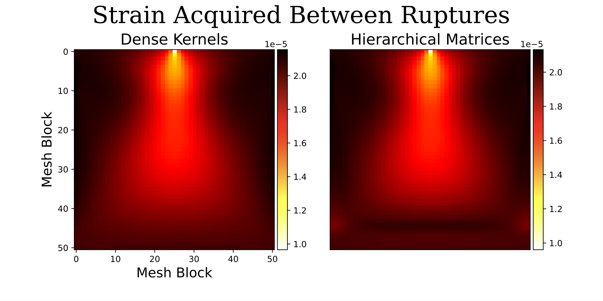

As a post-masters researcher in the Cosmological Physics and
Advanced Computing (CPAC) group at Argonne National Lab, I work
closely with Dr. Matthew Becker in the development of a pipeline
for a differentiable galaxy-halo connection.
As cosmological surveys and simulations improve in scale and
resolution, theoretical tools to connect predictions to observed
data are crucial to fully realize the scientific potential of
these advancements. My work has focused on the development and
optimization of tools to connect dark matter simulations to
observed summary statistics. I have written a GPU kernel for
computing lensing signals, and scaled our code up to several hundred
GPUs on Argonne's Polaris and Sunspot computing systems.
Research
Argonne CPAC
UCSC Astronomy & Astrophysics
I worked with Professor Alexie Leauthaud as an undergraduate
and as a masters student while at UCSC. As part of the Merian survey,
I participated in remote observations on the Blanco and Keck telescopes,
reduced spectral data, and helped to QA the observing pipeline.
Most recently, I wrote my masters thesis on signals of breathing modes
in dwarf galaxies. Breathing modes, or the movement of a galaxy's gas
inward and outward as star formation fluctuates, have been
theorized as a possible solution to the cusp-core problem of cold dark
matter. I analyzed simulation data from the FIRE project and new
zoom simulations of dwarf galaxies from the Romulus code, as well
as spectral data observed from dwarf galaxies.
El-Badry et al. (2017) find a correlation between star formation rate
and gas velocity in the FIRE simulations, which can be used as an
observational test of breathing modes. However, in our Romulus zoom
simulations there is no such relation.
Comparing the simulation predictions to our Keck data, we find that the Romulus simulations better predict gas velocity / star formation rate relation than the FIRE simulations.
 The colored circles indicate data from the observed Keck dwarfs,
and the x's represent predictions from the Romulus zooms (above)
or FIRE galaxies (below). Like the Romulus zoom galaxies, our
observed galaxies show no signs of a correlation between star
formation rate and gas kinematics, suggesting that other processes
are at work in flattening dwarf galaxy density profiles.
The colored circles indicate data from the observed Keck dwarfs,
and the x's represent predictions from the Romulus zooms (above)
or FIRE galaxies (below). Like the Romulus zoom galaxies, our
observed galaxies show no signs of a correlation between star
formation rate and gas kinematics, suggesting that other processes
are at work in flattening dwarf galaxy density profiles.

Southern California Earthquake Center
I spent a summer as an intern at the Southern California
Earthquake Center working with Dr. Valère Lambert to
implement hierarchical matrices into simulations of earthquakes
and aseismic slip (SEAS) that include viscoelastic effects.
The interplay between localized fault slip and off-fault
viscoelastic deformation has substantial implications for the
loading of stress on faults, the recurrence of earthquake
ruptures, and the overall state of stress within the
lithosphere. Analytic solutions relating stress and slip
allow for efficient inclusion of bulk deformation in SEAS
simulation using the integral method. However, in standard
boundary integral method implementations, the number of
calculations necessary scales quadratically with the
number of computational elements, limiting the feasibility of
larger scale simulations. Hierarchical matrices provide an approximation
to a matrix-vector product, greatly speeding up computation.
We find that our hierarchical matrix implementation maintains
good accuracy and is faster for large matrices. Below, we can see
that the slip produced by the hierarchical matrix implementation
and a dense matrix implementation are nearly identical.
Additionally, we find that the hierarchical matrix implmentation accurately recreates the strain accumulation of a viscoelastic region between ruptures. There are some differences compared to a dense matrix simulation at regions far from a fault that are a result of the approximations made in the hierarchical matrix vector product.
I presented these results at the 2021 Seismological Society of America Annual Meeting.